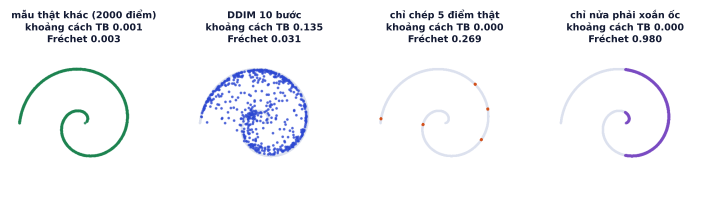
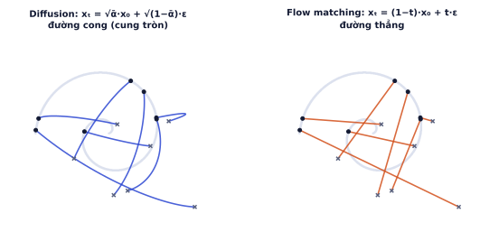
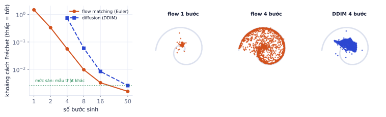

Bài 1
CLIP score
tính tayCosine giữa embedding ảnh và prompt là 0.31.
Lời giải
100 × 0.31 = 31. Giá trị CLIP score thường gặp với model tạo ảnh tốt nằm khoảng 25–35 tùy model CLIP dùng để đo; chỉ so sánh khi dùng cùng model CLIP.
"Ảnh đẹp hơn" là cảm nhận. Để so sánh model gốc với model có LoRA, hay so hai sampler, cần con số: CLIP score đo ảnh có bám prompt không, FID đo ảnh có giống ảnh thật về phân phối không, và đánh giá bằng người cho những gì máy không đo được. Nửa sau của bài giới thiệu rectified flow / flow matching, cách FLUX (model mà đồ án cũ của bạn gọi qua API) sinh ảnh tốt chỉ với vài bước, kèm thí nghiệm so với diffusion trên dữ liệu 2D.
Khi giao một LoRA cho khách, câu "trông đẹp hơn" không đủ. Báo cáo "CLIP score tăng từ 27,8 lên 29,3, người chấm chọn bản LoRA 64% số lần" thì thuyết phục, và cho phép bạn biết thay đổi nào thực sự có ích. Đây cũng là cùng tư duy eval như với LLM (P4.3), áp dụng cho ảnh.
Mỗi cách đo trả lời một câu hỏi khác nhau:
| Câu hỏi | Thước đo | Cần |
|---|---|---|
| Ảnh có đúng nội dung prompt không? | CLIP score | ảnh + prompt |
| Tập ảnh sinh có giống ảnh thật (chất lượng và đa dạng)? | FID, KID | nhiều ảnh sinh + nhiều ảnh thật |
| Ảnh có dùng được cho mục đích cụ thể không? | đánh giá bằng người | người chấm, tiêu chí rõ |
Mã hóa ảnh và prompt bằng CLIP (P5.3), tính cosine giữa hai embedding:
CLIP score = 100 · max(cos(E_ảnh, E_prompt), 0)
Ảnh sinh từ prompt "a rattan armchair on white background" có cosine với prompt là 0.27, nên CLIP score = 27. Cùng ảnh đó so với prompt "a red sports car" có cosine 0.12, CLIP score = 12. Điểm tuyệt đối ít ý nghĩa; điểm có ích khi so sánh hai model trên cùng bộ prompt, cùng model CLIP dùng để đo.
Cách dùng đúng: chuẩn bị 100–500 prompt đại diện cho trường hợp sử dụng, sinh một ảnh mỗi prompt cho mỗi model (cùng seed), lấy trung bình CLIP score.
Hạn chế đã biết của CLIP:
FID (Fréchet Inception Distance) so sánh hai tập ảnh, không chấm từng ảnh:
FID = ‖μ_thật − μ_sinh‖² + Tr(Σ_thật + Σ_sinh − 2·(Σ_thật Σ_sinh)^½)
Phần đầu đo lệch trung bình (ảnh sinh "trung bình" có giống ảnh thật "trung bình" không); phần sau đo lệch độ trải (đa dạng nhiều hay ít hơn ảnh thật).
Trường hợp 1 chiều cho dễ tính: ảnh thật có μ = 0.5, phương sai 1; ảnh sinh có μ = 0.2, phương sai 0.25.
Dùng đúng công thức trên ở 2 chiều (bỏ bước Inception, dùng thẳng tọa độ điểm), so tập xoắn ốc với bốn tập "sinh". Đồng thời đo khoảng cách trung bình từ mỗi điểm sinh tới điểm thật gần nhất, tương tự "từng ảnh có đẹp không".

Chú ý ô đầu: so hai mẫu thật khác nhau, mỗi mẫu 2000 điểm, Fréchet vẫn là 0.003 chứ không phải 0. Đó là sai số do số mẫu hữu hạn. Với ảnh, vector 2048 chiều cần ước lượng ma trận Σ có hơn 2 triệu phần tử, nên sai số này lớn hơn nhiều.
def frechet(a, b): # a, b: (N, d) đặc trưng của hai tập
ma, mb = a.mean(0), b.mean(0)
ca, cb = torch.cov(a.T), torch.cov(b.T)
tr_sqrt = torch.linalg.eigvals(ca @ cb).real.clamp(min=0).sqrt().sum() # Tr((Σa Σb)^½)
return ((ma - mb) ** 2).sum() + ca.trace() + cb.trace() - 2 * tr_sqrt
(chạy xong, không in ra gì)
Với ảnh thật, dùng thư viện đã chuẩn hóa (torchmetrics có FrechetInceptionDistance, hoặc clean-fid) để kết quả so được với bài báo, vì cách resize ảnh và phiên bản Inception làm FID lệch đáng kể.
So FID tính trên vài trăm ảnh. FID cần thường 5.000–50.000 ảnh. Với 500 ảnh, FID lệch lên cao và dao động mạnh giữa các lần chạy; chênh 2–3 điểm có thể chỉ là nhiễu. Với tập nhỏ dùng KID (Kernel Inception Distance, không thiên lệch theo số mẫu), và chỉ so khi cùng tập ảnh thật, cùng số ảnh, cùng cách tiền xử lý.
Máy không đo được "ảnh này có dùng được cho trang bán hàng không". Đánh giá bằng người có hệ thống gồm:
120 lượt so sánh model gốc với model + LoRA, tiêu chí "đúng phong cách ảnh sản phẩm của shop": LoRA thắng 70, hòa 14, thua 36.
Nếu chỉ có 20 lượt với cùng tỉ lệ, khoảng tin cậy rộng tới khoảng ±0.21, chưa kết luận được.
Diffusion định nghĩa xₜ = √ᾱₜ·x₀ + √(1−ᾱₜ)·ε. Với một cặp cố định (x₀, ε), khi t chạy từ 0 tới T, điểm xₜ vạch một đường cong (hai hệ số có bình phương cộng lại bằng 1 nên đường đi là một cung). Flow matching (Lipman và cộng sự, 2022; Liu và cộng sự với rectified flow) chọn đường thẳng nối dữ liệu và nhiễu:
xₜ = (1 − t) · x₀ + t · ε, t ∈ [0, 1] (t = 0: dữ liệu, t = 1: nhiễu)
vận tốc dọc đường: v = dxₜ/dt = ε − x₀ (hằng số, vì đường thẳng)

Dữ liệu x₀ = −1, nhiễu ε = 1.5.
Với một cặp duy nhất, đi một bước là tới. Vấn đề: khi sinh, model không biết x₀ là gì; nó chỉ học được vận tốc trung bình trên mọi cặp đi qua điểm xₜ. Các đường thẳng cắt nhau (hình phải), nên vận tốc trung bình làm đường đi thật cong nhẹ, và cần vài bước thay vì một.
Train một model flow matching cùng kiến trúc MLP với model DDIM ở P5.2 (cùng dữ liệu xoắn ốc, cùng số bước train), rồi so khoảng cách Fréchet theo số bước sinh:

Điểm lợi của flow matching là chất lượng khi ít bước, đúng thứ quyết định chi phí và độ trễ của một app tạo ảnh.
Diffusion và flow matching thực ra rất gần nhau. Cả hai đều nội suy giữa dữ liệu và nhiễu Gauss; chỉ khác hệ số (√ᾱ, √(1−ᾱ) so với 1−t, t) và đại lượng model đoán (ε so với v = ε − x₀). Biết một thì đổi sang cái kia bằng phép tính đại số; một model diffusion đoán ε có thể chạy với sampler kiểu flow và ngược lại. Lý do flow matching thắng ở ít bước là đường nội suy thẳng làm trường vận tốc đơn giản hơn, dễ tích phân bằng vài bước lớn.
Ghi nhớ: diffusion và flow matching là hai cách tham số hóa cùng một ý tưởng: học cách biến nhiễu thành dữ liệu. Khác nhau ở đường đi (cong hay thẳng) và đại lượng model đoán (nhiễu hay vận tốc).
| Thước đo | Đo gì | Lưu ý |
|---|---|---|
| CLIP score | ảnh bám prompt | yếu ở đếm, vị trí, chữ; chỉ dùng để so sánh |
| FID | chất lượng + đa dạng so với ảnh thật | cần hàng nghìn ảnh; thấp là tốt |
| KID | như FID | dùng cho tập nhỏ |
| Người chấm A/B | điều máy không đo được | mù, ngẫu nhiên vị trí, tách tiêu chí, có khoảng tin cậy |
| Thuật ngữ | Nghĩa |
|---|---|
| CLIP score | 100 × cosine giữa embedding ảnh và prompt |
| FID | khoảng cách Fréchet giữa đặc trưng Inception của hai tập ảnh |
| KID | Kernel Inception Distance |
| win rate | tỉ lệ thắng trong so sánh cặp |
| confidence interval | khoảng tin cậy |
| flow matching | học trường vận tốc dọc đường nội suy thẳng |
| rectified flow / reflow | nắn thẳng đường đi bằng train lại trên cặp model tự sinh |
| Euler method | tích phân từng bước x ← x − Δ·v |
| distillation | chưng cất nhiều bước thành ít bước |
| DiT / MMDiT | Transformer làm mạng khử nhiễu thay U-Net |
Cosine giữa embedding ảnh và prompt là 0.31.
100 × 0.31 = 31. Giá trị CLIP score thường gặp với model tạo ảnh tốt nằm khoảng 25–35 tùy model CLIP dùng để đo; chỉ so sánh khi dùng cùng model CLIP.
Đặc trưng 1 chiều. Ảnh thật: μ = 0, phương sai 1. Ảnh sinh: μ = 1, phương sai 4. (Với 1 chiều, Tr(...) = σ₁² + σ₂² − 2σ₁σ₂.)
Phần trung bình (0 − 1)² = 1. Phần phương sai 1 + 4 − 2·√4 = 1. FID = 2. Nếu ảnh sinh có đúng μ = 0 và phương sai 1 thì FID = 0.
Thiết kế khảo sát với 10 người để so model gốc và model + LoRA ở GĐ5: bao nhiêu prompt, hỏi gì, trình bày ra sao, tính kết quả thế nào.
20 prompt (10 trong miền LoRA, 10 ngoài miền để kiểm tra model không bị hỏng), mỗi prompt sinh một ảnh từ mỗi model cùng seed. Mỗi câu hỏi hiện hai ảnh, vị trí trái/phải ngẫu nhiên, không ghi tên model. Hỏi riêng: "Ảnh nào đúng phong cách mục tiêu hơn?" và "Ảnh nào bám mô tả hơn?", có lựa chọn "ngang nhau". Kết quả: tỉ lệ thắng của LoRA theo từng tiêu chí, tính hòa là nửa thắng, tách riêng trong miền và ngoài miền.
Sửa code GĐ1: thay đoán nhiễu bằng đoán vận tốc theo flow matching, lấy t liên tục trong [0, 1], và sinh bằng Euler với 10 bước. So sánh với DDPM 1000 bước.
import torch, torch.nn as nn, torch.nn.functional as F, math
def make_spiral(n):
th = torch.sqrt(torch.rand(n)) * 3 * math.pi
return torch.stack([th * torch.cos(th), th * torch.sin(th)], 1) / (3 * math.pi) + 0.02 * torch.randn(n, 2)
class VNet(nn.Module):
def __init__(self, h=128):
super().__init__()
self.net = nn.Sequential(nn.Linear(3, h), nn.SiLU(), nn.Linear(h, h), nn.SiLU(), nn.Linear(h, h), nn.SiLU(), nn.Linear(h, 2))
def forward(self, x, t):
return self.net(torch.cat([x, t[:, None]], 1))
data, model = make_spiral(10000), VNet()
opt = torch.optim.Adam(model.parameters(), 1e-3)
for step in range(4000):
x0 = data[torch.randint(0, len(data), (512,))]
eps, t = torch.randn_like(x0), torch.rand(512)
xt = (1 - t[:, None]) * x0 + t[:, None] * eps
loss = F.mse_loss(model(xt, t), eps - x0)
opt.zero_grad(); loss.backward(); opt.step()
@torch.no_grad()
def sample(n=2000, steps=10):
x, dt = torch.randn(n, 2), 1.0 / steps
for i in range(steps, 0, -1):
x = x - dt * model(x, torch.full((n,), i * dt))
return x
pts = sample()
print("khoảng cách TB tới dữ liệu:", torch.cdist(pts, data[:5000]).min(1).values.mean().item())
khoảng cách TB tới dữ liệu: 0.03564347326755524
Dùng: FID: khớp phân phối chuẩn nhiều chiều cho đặc trưng ảnh thật và ảnh sinh, khoảng cách Fréchet; FID bắt được cả sai lệch lẫn thiếu đa dạng.
Thay cho đặc trưng Inception 2048 chiều, dùng đặc trưng 16 chiều giả lập. So ảnh thật với ba "model": (a) tốt: phân phối gần đúng; (b) lệch: trung bình bị dịch; (c) sụp đổ (mode collapse): đúng trung bình nhưng độ đa dạng chỉ còn 30%. Viết fid(A, B) theo công thức ‖μ₁ − μ₂‖² + Tr(Σ₁ + Σ₂ − 2(Σ₁Σ₂)^½) và xếp hạng ba model.
import numpy as np
from scipy.linalg import sqrtm
rng = np.random.default_rng(0)
d, n = 16, 2000
L = rng.normal(0, 0.3, (d, d))
that = rng.multivariate_normal(np.zeros(d), np.eye(d) + L @ L.T, n)
tot = rng.multivariate_normal(np.zeros(d), np.eye(d) + L @ L.T, n) * 1.03
lech = that + 0.5 + rng.normal(0, 0.05, (n, d))
sup_do = that.mean(0) + 0.3 * (rng.multivariate_normal(np.zeros(d), np.eye(d) + L @ L.T, n))
def fid(A, B):
# TODO
return 0.0
Viết code vào chỗ trống rồi bấm Chạy.
mu1, mu2 = A.mean(0), B.mean(0); S1, S2 = np.cov(A, rowvar=False), np.cov(B, rowvar=False); cs = sqrtm(S1 @ S2).real (bỏ phần ảo rất nhỏ do sai số số học).
def fid(A, B):
mu1, mu2 = A.mean(0), B.mean(0)
S1, S2 = np.cov(A, rowvar=False), np.cov(B, rowvar=False)
cs = sqrtm(S1 @ S2).real
return float(((mu1 - mu2) ** 2).sum() + np.trace(S1 + S2 - 2 * cs))
kq = {ten: fid(that, B) for ten, B in [("tốt", tot), ("lệch", lech), ("sụp đổ", sup_do)]}
for ten, v in sorted(kq.items(), key=lambda p: p[1]):
print(f"{ten:7s}: FID {v:.2f}")
print("FID thật với chính nó (hai nửa):", round(fid(that[:1000], that[1000:]), 2))
tốt : FID 0.25 lệch : FID 3.99 sụp đổ : FID 19.31 FID thật với chính nó (hai nửa): 0.29
Model sụp đổ có trung bình đúng, nên metric chỉ so trung bình sẽ khen nó; FID nhìn cả ma trận hiệp phương sai nên phạt việc thiếu đa dạng. Chú ý FID của hai nửa dữ liệu thật cũng không bằng 0: FID có sai số theo số mẫu, nên chỉ so FID tính trên cùng số ảnh, cùng bộ đặc trưng.
Dùng: đánh giá bằng người: so sánh cặp, tỉ lệ thắng, khoảng tin cậy, kiểm tra người chấm cẩu thả.
120 lượt so sánh: mỗi lượt người chấm xem ảnh của model A và model B (vị trí trái phải ngẫu nhiên) cho cùng prompt và chọn ảnh tốt hơn hoặc "hòa". Trong khảo sát có cài 10 câu kiểm tra (một ảnh rõ ràng hỏng); người chấm sai từ 2 câu kiểm tra trở lên bị loại. Tính tỉ lệ thắng của A (hòa tính nửa) sau khi loại người chấm cẩu thả, và khoảng tin cậy 95% bằng bootstrap.
import numpy as np
rng = np.random.default_rng(0)
nguoi = rng.integers(0, 8, 120) # 8 người chấm
cau_thua = {3: 3, 6: 2} # người 3 sai 3 câu kiểm tra, người 6 sai 2
ket_qua = rng.choice(["A", "B", "hòa"], 120, p=[0.52, 0.33, 0.15])
ket_qua[nguoi == 3] = rng.choice(["A", "B"], (nguoi == 3).sum()) # người cẩu thả: chọn bừa
# TODO: loại người sai >= 2 câu kiểm tra; diem (1 / 0,5 / 0); win_rate; ci (bootstrap 5000 lần)
Viết code vào chỗ trống rồi bấm Chạy.
giu = ~np.isin(nguoi, [k for k, v in cau_thua.items() if v >= 2]). Điểm: np.select([kq == "A", kq == "hòa"], [1.0, 0.5], 0.0). Bootstrap: lấy mẫu có hoàn lại các lượt đã giữ, tính trung bình, lấy phân vị 2,5 và 97,5.
giu = ~np.isin(nguoi, [k for k, v in cau_thua.items() if v >= 2])
kq = ket_qua[giu]
diem = np.select([kq == "A", kq == "hòa"], [1.0, 0.5], 0.0)
win_rate = diem.mean()
rb = np.random.default_rng(1)
bs = [diem[rb.integers(0, len(diem), len(diem))].mean() for _ in range(5000)]
ci = np.percentile(bs, [2.5, 97.5])
print(f"giữ {giu.sum()}/120 lượt | A thắng {win_rate:.1%}, khoảng tin cậy 95% [{ci[0]:.1%}, {ci[1]:.1%}]")
giữ 87/120 lượt | A thắng 59.2%, khoảng tin cậy 95% [50.0%, 67.8%]
Câu kiểm tra và đảo vị trí trái phải là hai cách rẻ nhất để có dữ liệu người chấm đáng tin. Kết luận "A tốt hơn B" chỉ đứng vững khi cả khoảng tin cậy nằm trên 50%; nếu không, cần thêm lượt chấm. Ở đây A thắng gần 60% nhưng sau khi loại người chấm cẩu thả chỉ còn 87 lượt, và cận dưới của khoảng tin cậy chưa vượt 50%: chưa đủ để công bố A tốt hơn.
Các bước
CLIPScore) cho từng ảnh, báo cáo trung bình theo nhóm trong/ngoài miền.Mẫu bảng kết quả
| CLIP score trong miền | CLIP score ngoài miền | KID | Tỉ lệ thắng (người) | Thời gian/ảnh | |
|---|---|---|---|---|---|
| SD 1.5 gốc | |||||
| SD 1.5 + LoRA |
Xong khi
import torch, numpy as np
from torchmetrics.multimodal.clip_score import CLIPScore
from torchmetrics.image.kid import KernelInceptionDistance
def to_uint8(pil_images):
return torch.stack([torch.from_numpy(np.array(im)).permute(2, 0, 1) for im in pil_images])
clip = CLIPScore(model_name_or_path="openai/clip-vit-base-patch16")
def clip_score(images, prompts):
return clip(to_uint8(images), prompts).item()
def kid(real_images, fake_images, subset=50):
m = KernelInceptionDistance(subset_size=subset)
m.update(to_uint8(real_images), real=True)
m.update(to_uint8(fake_images), real=False)
mean, std = m.compute()
return mean.item(), std.item()